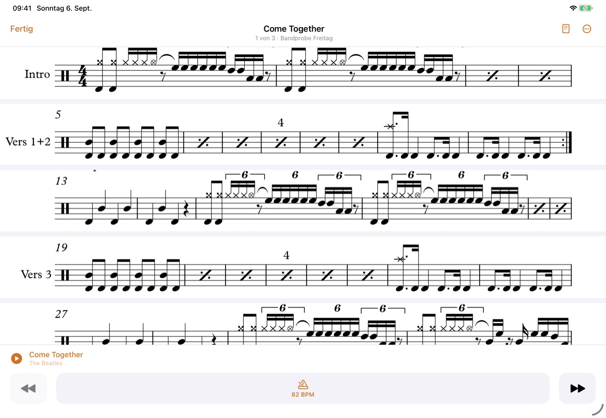
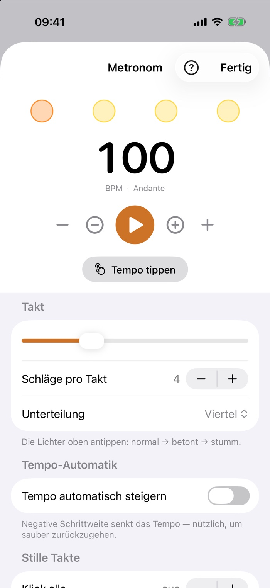
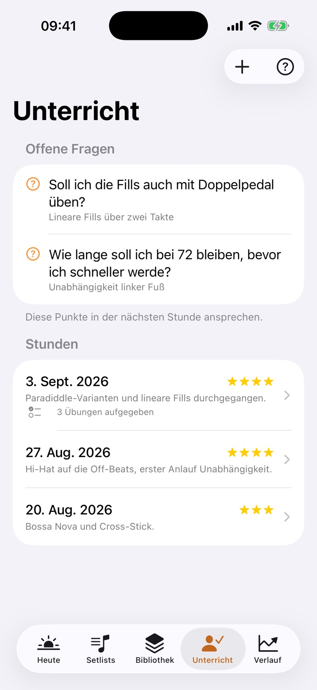
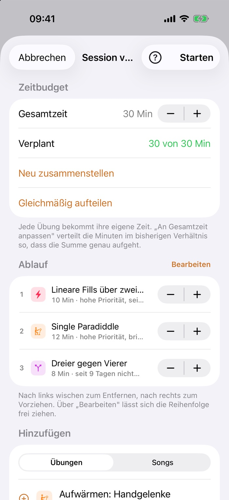
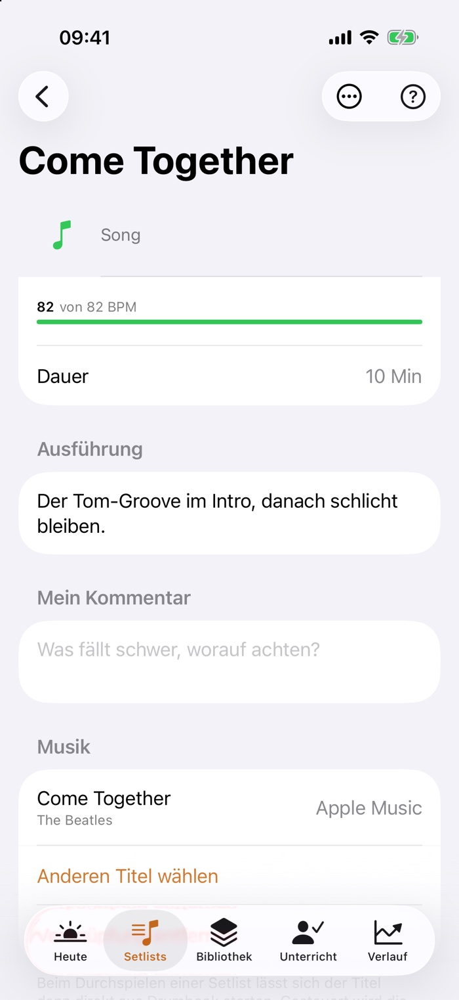
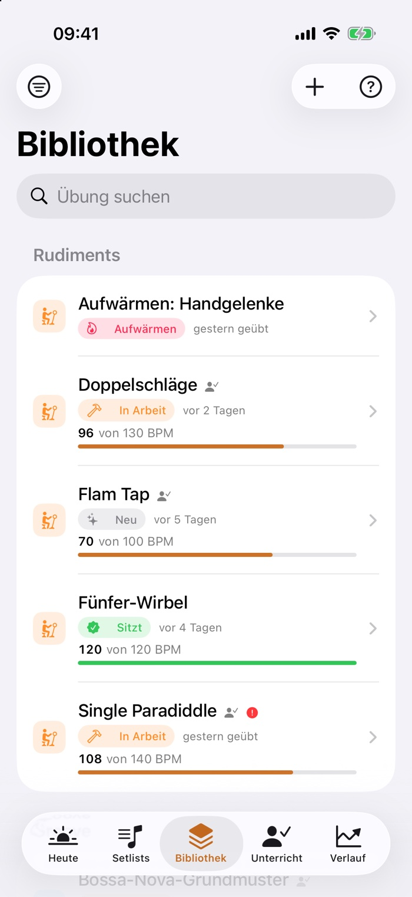
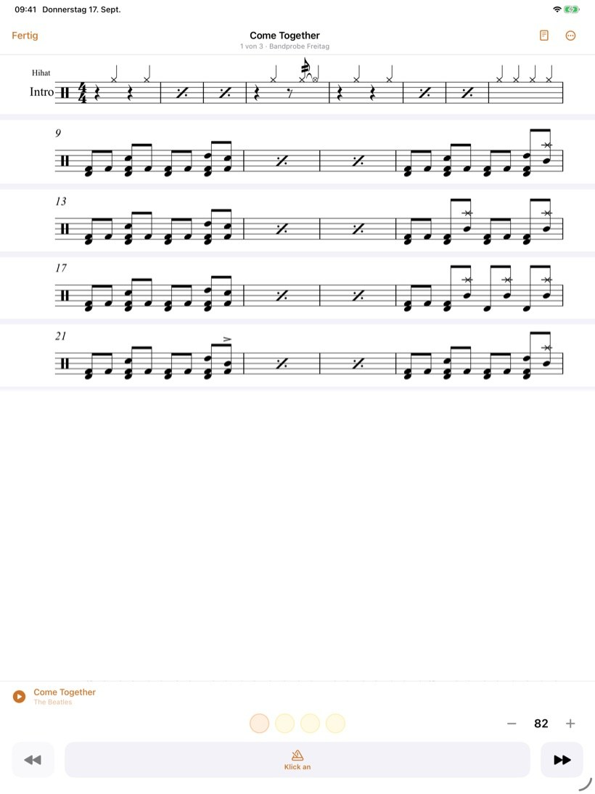
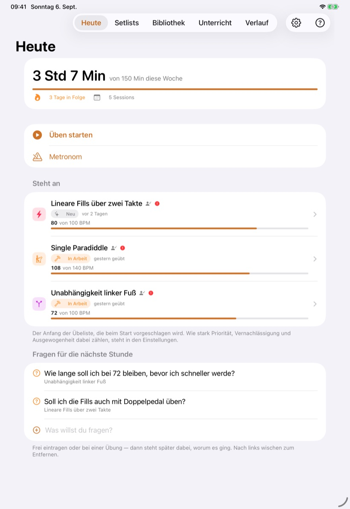
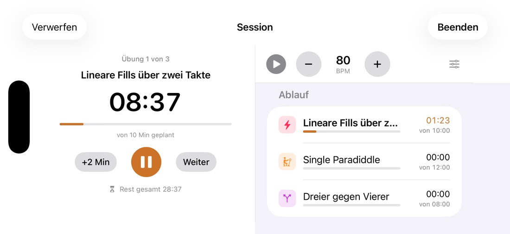

So funktioniert's
Drumbook im Detail.
Für alle, die es genau wissen wollen: wie das Notenband seine Zeilen findet, was die Uhr rechnet, was das Metronom kann, und wo deine Daten liegen.
Was Drumbook macht
Was in Drumbook steckt.
Beide Hände am Stock, keine zum Blättern
Notenblätter haben Seiten, und wer spielt, kann nicht umblättern. Drumbook schneidet deshalb die Notenzeilen aus deinem PDF heraus und setzt sie über die volle Breite untereinander: ein durchgehendes Band statt einzelner Seiten. Damit verschwindet das Umblättern als Problem, weil es keine Seiten mehr gibt.
- Die Zeilen findet die App selbst, an fünf Linien in gleichem Abstand. Das klappt bei gedruckten Blättern genauso wie bei abfotografierten, und bis etwa drei Grad Schräglage rechnet sie das Blatt gerade.
- Abschnittsnamen, Taktzahlen und Wiederholungszeichen bleiben dran. Seitlich wird bis zur letzten Tinte geschnitten statt bis zum Blattrand, und zwischen zwei Zeilen genau dort, wo nichts steht.
- Auf dem iPad wird eine Notenzeile gut doppelt so groß wie auf Papier, auf dem iPhone im Querformat rund anderthalb Mal. Im Hochformat gewinnt sie keine Größe, aber Ruhe: kein Rand, kein Blättern, jede Zeile an derselben Stelle.
- Der Bildschirm bleibt wach, solange die Noten offen sind. Sonst wird es beim zweiten Takt dunkel.
- Ist die Erkennung sich nicht sicher, sagt sie das und zeigt die gedruckte Seite, statt ein Band mit einer fehlenden Zeile zu bauen. Über einen Umschalter kommst du ohnehin jederzeit auf die Originalseite.
Und es läuft beim Spielen von selbst mit: zum Klick oder zur Musik aus deiner Mediathek. Ein Knopf startet beides. Läuft Musik, tippst du zweimal auf die Zeile, die du gerade spielst; danach kennt Drumbook Anfang und Tempo des Songs und fragt einmal, ob es passt. Für Stücke mit Wiederholungen und Sprüngen legst du unter „Feinabstimmung" fest, wo es weitergeht. Gespeichert wird in Schlägen statt in Sekunden: bei 90 eingestellt, stimmt es bei 130 unverändert.


Die Uhr denkt mit
Eine Session ist kein Wecker, sondern ein Ablaufplan. Du legst fest, wie lange du insgesamt Zeit hast; jede Übung bekommt ihre eigene Soll-Zeit. Zwei Countdowns laufen gleichzeitig: einer für die Übung, einer für den ganzen Abend.
- Automatischer Wechsel mit kurzer Pause, Ton und spürbarem Signal. Du musst das Handy nicht anfassen.
- Überziehen erlaubt. Wer bei einer Übung länger bleibt, nimmt den anderen nichts weg, die Restzeit rechnet ehrlich.
- Danach kurz bewerten: erreichtes Tempo und ein Urteil je Übung, eins für den ganzen Abend.
Ein Klick, der nicht eiert
Das Metronom rechnet jeden Schlag im Voraus in den Ton hinein statt sich auf einen Timer zu verlassen. Deshalb bleibt es auch nach zehn Minuten dort, wo es sein soll. Und jede Übung merkt sich ihre eigene Einstellung.
- Jeder Schlag einzeln: betont, normal oder stumm. Unterteilungen bis zur Sextole.
- Tempo tippen, Tempo automatisch steigern, nach einer festen Zahl Takte aufhören.
- Stille Takte fürs Timing: der Klick setzt aus, du spielst weiter und hörst beim Wiedereinsetzen, ob du noch drauf bist.
- Läuft bei gesperrtem Bildschirm weiter und lässt sich von dort bedienen.

Was der Lehrer sagt, ist nächste Woche noch da
Zu jeder Stunde hältst du fest, worum es ging und wie der Lehrer es eingeschätzt hat. Die aufgegebenen Übungen wandern direkt in die Bibliothek, und der Generator weiß, dass sie Vorrang haben.
- Fragen sammeln, sobald sie beim Üben auftauchen. In der nächsten Stunde stehen sie oben auf dem Bildschirm.
- Notenblätter dazu: abfotografiert, eingescannt oder als PDF, samt Sprachnotizen aus der Stunde.
- Ein Bericht als PDF zeigt dem Lehrer, was seit der letzten Stunde tatsächlich passiert ist.

Was sonst noch drin ist

Die Übeliste stellt sich selbst zusammen
Sag Drumbook, wie viele Minuten du hast. Den Rest macht der Generator. Er zieht heran, was zu lange liegen geblieben ist, achtet darauf, dass nicht dreimal dasselbe Thema drankommt, und lässt Wichtiges zuerst durch.

Sehen, wie es vorangeht
Jede Session landet im Verlauf. Nach ein paar Wochen siehst du schwarz auf weiß, wie viel du geübt hast, wohin die Zeit geflossen ist und wo das Tempo tatsächlich gestiegen ist.

Zum Original mitspielen
Ein Song sitzt erst, wenn er zur Aufnahme sitzt. Häng den echten Titel an eine Übung oder einen Song: aus deiner Mediathek, die Apple-Music-Titel darin inbegriffen. Du startest ihn am Notenblatt, und eine schwierige Stelle markierst du und spielst sie in der Schleife.

Deine Übungen, sortiert
Die Bibliothek hält alles zusammen: was die Übung soll, welches Tempo das Ziel ist, wo du gerade stehst, wann sie zuletzt dran war. Songs laufen getrennt mit; sie sollen die Übeliste nicht fluten.

Und außerdem
Der Kleinkram, der im Alltag den Unterschied macht.
Material an der Übung
Notenblätter scannen oder abfotografieren, PDFs importieren, Sprachnotizen aufnehmen, Links hinterlegen. Beim Üben liegt alles eine Berührung entfernt: Notenblätter als Band, alles andere zoombar auf dem ganzen Bildschirm.
Erinnerungen, die passen
Täglich zur festen Uhrzeit, oder erst dann, wenn du eine selbst gewählte Zahl von Tagen nicht am Set warst. Kein Dauerfeuer.
Setlists für die Probe
Songs in der Reihenfolge des Abends, jeder mit seinem Tempo und seiner Aufnahme. Beim Durchspielen steht das Blatt groß, die Knöpfe sind für Hände mit Stöcken gemacht, und der Bildschirm geht nicht zu. Keine Uhr, keine Bewertung: eine Probe ist keine Übesession.
Export und Sicherung
Ein Bericht als PDF für den Lehrer. Und eine vollständige Sicherung als Datei, die sich auch wieder einlesen lässt, mit Anhängen und ohne dass dabei etwas gelöscht wird.
Frei üben
Kein Plan, keine Übeliste: einfach ans Set und spielen. Die Uhr zählt hoch oder herunter, am Ende schreibst du auf, was war, und es zählt wie jede andere Session.
Hilfe, wo du gerade bist
Auf jedem Bildschirm sitzt ein Fragezeichen. Dahinter steht nicht irgendein Handbuch, sondern die Erklärung genau zu dem, was gerade vor dir liegt.
Hoch, quer, iPhone, iPad
Dasselbe Tagebuch, in jeder Lage.
Am Set steht das Gerät anders als auf dem Sofa: aufgestellt am Notenständer, flach neben der Hi-Hat, quer auf dem Knie. Deshalb ist jede Ansicht für beide Lagen gebaut, und auf dem iPad nicht einfach größer, sondern anders aufgeteilt.



Und es ist egal, auf welchem Gerät du anfängst: iPhone und iPad halten sich über deine eigene iCloud gleich: Übungen, Sessions, Notenblätter und seit Kurzem auch die Einstellungen.

Deine Daten
Bleibt alles hier.
Drumbook ist eine App ohne Rückkanal. Sie hat keine Anmeldung, kein Konto und keinen Server, auf dem deine Übungen landen. Das ist keine Einstellung, sondern schlicht nicht eingebaut. Gleichen sich deine Geräte ab, läuft das durch deine eigene iCloud. Was du übst, geht niemanden etwas an.
- Deine Daten, deine iCloudÜbungen, Sessions, Notizen und Notenblätter liegen auf deinem Gerät. Hast du iPhone und iPad, halten sie sich über deine private iCloud gleich: kein Konto, kein Passwort, kein Server von mir dazwischen. Ich komme an nichts davon heran.
- Nichts wird gemessenEs sind keine Analyse-Werkzeuge eingebaut, Absturzberichte gehen an niemanden, und eine Werbekennung hat die App nicht. Sie zählt nicht mit, wie du sie benutzt.
- Kein Konto nötigDu legst kein Passwort an und trägst nirgends eine Adresse ein. Für den Abgleich genügt die Apple-Anmeldung, die auf deinem Gerät ohnehin schon da ist.
- Du kommst jederzeit rausDie vollständige Sicherung ist eine offene Datei, die du selbst besitzt. Kein Datenschatz, den jemand für sich behält.
Stand der Dinge
Was fertig ist und was nicht.
Drumbook ist ein Projekt aus dem Proberaum, kein Produkt einer Firma. Hier steht, was schon läuft und was noch kommt.
Läuft und wird benutzt
- Bibliothek, Sessions mit Ablaufplan und doppelter Uhr
- Metronom mit Vorzähler, auch bei gesperrtem Bildschirm
- Unterricht, Fragen an den Lehrer, Verlauf mit Diagramm
- Material, Erinnerungen, Setlists, Übelisten-Generator
- Frei üben: eine Session ohne Übeliste, mit Dauer oder hochzählend
- Das Notenband: die Zeilen aus dem PDF, über die volle Breite untereinander
- Das Notenband läuft zum Klick oder zur Musik aus deiner Mediathek mit
- Eine Stelle im Song markieren und in der Schleife üben
- Ein Foto zur Begrüßung, jeden Tag ein anderes
- Notizen im Notenblatt: Striche, Abschnitte und Achtung-Zeichen, mit dem Apple Pencil oder dem Finger
- Bericht als PDF mit Zusammenfassung auf Seite 1, Sicherung mit Wiederherstellung
- Titel aus der Mediathek verknüpfen und beim Üben abspielen
- Läuft auf iPhone und iPad, hoch und quer, auf Deutsch und auf Englisch
- Abgleich zwischen iPhone und iPad über deine eigene iCloud, ohne Konto und ohne Anmeldung
- Das Notenblatt mitten in der Session, auch als Foto aus dem Übungsbuch
- Die erste Testfassung über TestFlight, seit dem 2. September
- Ein geführter erster Start, mit sechs Übungen zum Anfangen, falls noch keine da sind
- Die Testrunde läuft, seit dem 17. September auch außerhalb des engsten Kreises
Steht noch aus
- Der Weg in den App Store; bis dahin gibt es die App nur über TestFlight
- Mehr Rückmeldungen von Schlagzeugern außerhalb meines eigenen Kreises
- Pausen über mehrere Takte zählt das Notenband noch falsch
- Auf dem iPad das geteilte Fenster neben einer anderen App
- Der Apple-Music-Katalog und Spotify; bisher geht nur, was in deiner Mediathek steht

Selbst ausprobieren.
Drumbook ist gerade kostenlos im Test. Die Einladung holst du dir auf der Startseite.